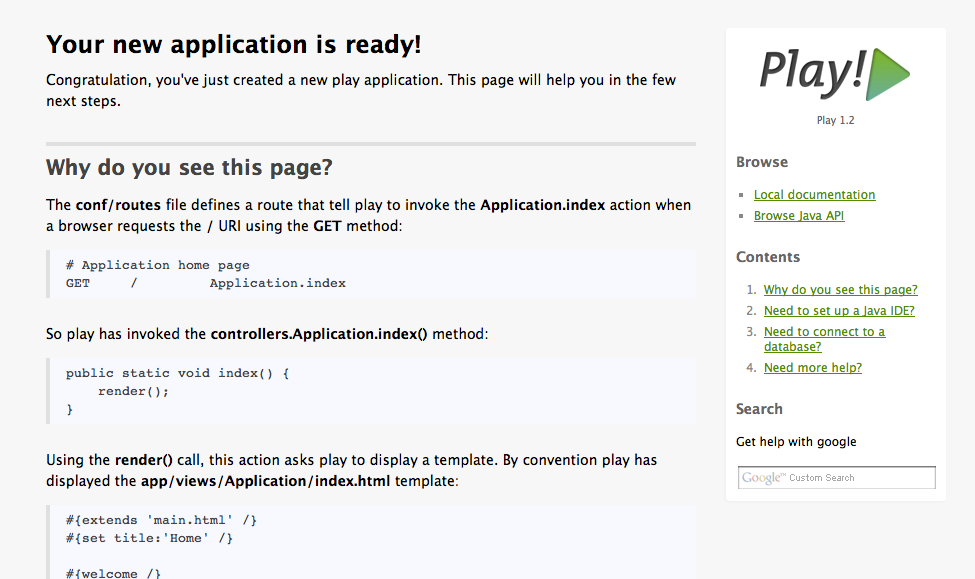
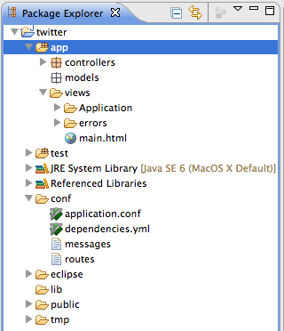
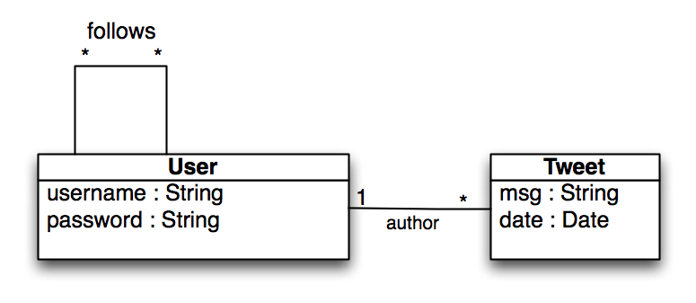
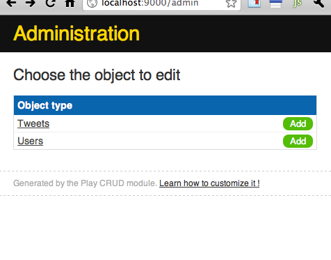
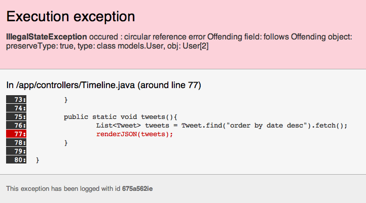

¿Aplicación de tareas en 10 minutos?
En el taller conseguiremos hacer...
Crear Twitter
Descargar la última versión desde
http://www.playframework.org/download
Descomprimir en una carpeta y añadir la ruta al PATH
Comados para crear un proyecto nuevo
play new twitter
cd twitter
play run
Abrir http://localhost:9000/

Play viene preparado para integrarse con varios IDEs. En el taller utilizaremos Eclipse.
Genera los archivos de configuración de Eclpse:
play eclipsify
Importar el proyecto en eclipse:
File/Import/General/Existing project
Estructura de una aplicación play

Creamos el primer controlador
controller/Application.java
public static void index() {
String msg = "HOLA TLP!";
render(msg);
}
views/Application/index.html
#{extends 'main.html' /}
#{set title:'Home' /}
<h2>${msg}</h2>
conf/routes
GET / Application.index

package models;
import java.util.ArrayList;
import java.util.List;
import javax.persistence.Entity;
import javax.persistence.ManyToMany;
import play.db.jpa.Model;
@Entity
public class User extends Model {
public String username;
public String password;
@ManyToMany
public List<User> follows;
public User(String username, String password) {
super();
this.username = username;
this.password = password;
follows = new ArrayList<User>();
}
}
package models;
import java.util.Date;
import javax.persistence.Entity;
import javax.persistence.ManyToOne;
import play.db.jpa.Model;
@Entity
public class Tweet extends Model {
public String msg;
@ManyToOne
public User author;
public Date date;
public Tweet(String msg, User author){
this.msg = msg;
this.author = author;
date = new Date();
}
}
Vamos a crear un test para demostrarlo
import models.User;
import org.junit.Assert;
import org.junit.Test;
import play.test.UnitTest;
public class ByteCode extends UnitTest {
@Test
public void getter(){
User user = new User("tlp", "secret");
System.out.println(user.username);
Assert.assertEquals("tlp", user.username);
}
}
Bastante simple, debería funcionar.
18:14:12,284 INFO ~ Starting /Volumes/Datos/Proyectos/play/tlp/twitter/.
18:14:13,085 WARN ~ You're running Play! in DEV mode
18:14:14,386 INFO ~ Connected to jdbc:h2:mem:play;MODE=MYSQL;LOCK_MODE=0
18:14:15,140 INFO ~ Application 'twitter' is now started !
tlp
Si ahora añadimos el getter a la clase User
public String getUsername(){
return "llamada al getter";
}
Al volver a ejecutar el test ahora falla.
18:17:15,030 INFO ~ Starting /Volumes/Datos/Proyectos/play/tlp/twitter/.
18:17:15,780 WARN ~ You're running Play! in DEV mode
18:17:17,035 INFO ~ Connected to jdbc:h2:mem:play;MODE=MYSQL;LOCK_MODE=0
18:17:17,814 INFO ~ Application 'twitter' is now started !
llamada al getter
* No te olvides de borrar el método getUsername(), era sólo una prueba
Al extender de la clase Model, play añade los métodos básicos de CRUD. Creamos un nuevo test para probarlo.
import models.User;
import org.junit.Assert;
import org.junit.Test;
import play.db.jpa.GenericModel.JPAQuery;
import play.test.UnitTest;
public class ModelTest extends UnitTest {
@Test
public void user(){
User user1 = new User("user1", "secretPassword1234");
user1.save();
User user2 = new User("user2", "ultraSecretPassword");
user2.save();
long numeroUsuario = User.count();
Assert.assertEquals(2, numeroUsuario);
User findUser1 = User.find("byUsername", "user1").first();
Assert.assertNotNull(findUser1);
Assert.assertEquals("secretPassword1234", findUser1.password);
}
}
Play incorpora una clase de utilidad que permite cargar datos en la base de datos desde ficheros escritos en YAML.
*IMPORTANTE: Al escribir el yaml cuidado con los tabuladores, se utilizan espacios para separar
test/data.yml
User(user1):
username: user1
password: user1
User(user2):
username: user2
password: user2
Tweet(tweet1):
msg: "Este es el primer tweet"
author : user1
Tweet(tweet2):
msg: "Segundo tweet"
author : user2
Para cargar los datos se utiliza la clase Fixtures.
public class ModelTest extends UnitTest {
@Before
public void setup(){
Fixtures.deleteAllModels();
Fixtures.loadModels("data.yml");
}
@Test
public void user(){
long numeroUsuario = User.count();
Assert.assertEquals(2, numeroUsuario);
User findUser1 = User.find("byUsername", "user1").first();
Assert.assertNotNull(findUser1);
Assert.assertEquals("secretPassword1234", findUser1.password);
}
}
Cuando ejecutamos los test nos aparecía la siguiente línea que indica que estamos utilizando una base de datos en memoria.
Connected to jdbc:h2:mem:play;MODE=MYSQL;LOCK_MODE=0
En el fichero de configuración conf/application.conf podemos específicar qué base de datos queremos utilizar.
#Es la configuración utilizada en los test
%test.db.url=jdbc:h2:mem:play;MODE=MYSQL;LOCK_MODE=0
#Descomentar esta opción para utilizar la base de datos
db=mem
Play trae integrado un administrador de base de datos.
Copia el fichero initial-data.yml en la carpeta conf/
Crea la clase Bootstrap que se ejecutará cada vez que inicies la aplicación y cargará los datos desde el fichero initial-data.yml
app/app/Bootstrap.java
package app;
import models.User;
import play.jobs.Job;
import play.jobs.OnApplicationStart;
import play.test.Fixtures;
@OnApplicationStart
public class Bootstrap extends Job {
public void doJob(){
if(User.count() == 0){
Fixtures.loadModels("initial-data.yml");
}
}
}
Listando todos los tweets. Primera aproximación listando todos los tweets de la base de datos.
app/controller/Timeline.java
public class Timeline extends Controller {
public static void index(){
List<Tweet> tweets = Tweet.find("order by date desc").fetch();
render(tweets);
}
}
conf/routes
GET / Timeline.index
app/views/Timeline/index.html
#{extends 'main.html' /}
#{set title:'timeline' /}
<h2>Timeline</h2>
#{if tweets.size() == 0}
<p>No hay ningún tweet que mostrar</p>
#{/if}
#{else}
#{list items:tweets, as:'tweet'}
<div class="tweet">
<div class="tweet-author">${tweet.author.username}</div>
<div class="tweet-msg">${tweet.msg}</div>
<div class="tweet-date">${tweet.date}</div>
</div>
#{/list}
#{/else}
Los tags permiten reutilizar código en las vistas. Los tags se pueden parametrizar. Dentro del tag, los argumentos se reciben con _nombreDelParametro. El parámetro por defecto es _arg
app/views/tags/tweet.html
<div class="tweet">
<div class="tweet-author">${_arg.author.username}</div>
<div class="tweet-msg">${_arg.msg}</div>
<div class="tweet-date">${_arg.date}</div>
</div>
app/views/Timeline/index.html
...
#{list items:tweets, as:'tweet'}
#{tweet tweet /}
#{/list}
...
Play tiene un sistema muy completo de módulos. Un módulo es más que una librería, puede añadir controladores, rutas, recursos. Puedes crearte tus propios módulos.
En esta dirección puedes consultar los módulos disponibles.
http://www.playframework.org/modules
En el taller aprenderemos utilizarmos los módulos:
Instalación:
Añadir dependencia a conf/dependencies.yml
require:
- play -> secure
Ejecutar
play dependencies
play eclipsify
F5 en el proyecto de eclipse
Añadir rutas por defecto a conf/routes
* / module:secure
Reiniciar el servidor
Uso:
package controllers;
...
@With(Secure.class)
public class Timeline extends Controller {
...
}
Personalizar mecanismo de seguridad
controllers/Security.java
package controllers;
import models.User;
public class Security extends Secure.Security {
static boolean authenticate(String username, String password) {
User user = User.find("byUsername", username).first();
return user != null && user.password.equals(password);
}
static User userConnected(){
User user = User.find("byUsername", session.get("username")).first();
return user;
}
}
Instalación:
Añadir dependencia a conf/dependencies.yml
require:
- play -> crud
Ejecutar
play dependencies
play eclipsify
F5 en el proyecto de eclipse
Añadir rutas por defecto a conf/routes
* /admin module:crud
Crear los siguientes controladores
controllers/Tweets.java
package controllers;
import play.mvc.With;
@With(Secure.class)
public class Tweets extends CRUD {
}
controllers/User.java
package controllers;
import play.mvc.With;
@With(Secure.class)
public class Users extends CRUD {
}
Entrar en http://localhost:9000/admin

Copia estos archivos en las rutas indicadas para personalizar el aspecto de la página
views/Timeline/index.html
<div class="happening">
#{form @Timeline.addTweet(), id:"tweet-form"}
<label>What's happening</label>
<textarea name="tweet.msg" id="tweet-msg"> </textarea>
<div class="button_container">
<input type="submit" value="Tweet" id="tweet-submit">
</div>
#{/form}
</div>
controller/Timeline.java
public static void addTweet(Tweet tweet){
tweet.author = Security.userConnected();
tweet.date = new Date();
tweet.save();
index(); //redirige de nuevo al timeline
}
conf/routes
POST /addTweet Timeline.addTweet
models/Tweet.java
@MaxLength(140)
@Required
public String msg;
controllers/Timeline.java
public static void addTweet(@Valid Tweet tweet) {
if (validation.hasErrors()) {
params.flash();
validation.keep();
} else {
tweet.author = Security.userConnected();
tweet.date = new Date();
tweet.save();
}
index();
}
view/Timeline/index.html
#{ifErrors}
<ul class="errors">
#{errors}
<li>${error}</li>
#{/errors}
</ul>
#{/ifErrors}
Añadimos un nuevo método en Timeline.java
public static void tweets(){
List<Tweet> tweets = Tweet.find("order by date desc").fetch();
renderJSON(tweets);
}
renderJSON - Renderiza un objeto en formato JSON
Añadimos la ruta
GET /api/tweets Timeline.tweets
Accedemos a la página

El problema y la solución está ampliamente explicado en este post.
En resumen:
Soluciones:
conf/dependencies.yml
require:
- play
- play -> secure
- play -> crud
- net.sf.flexjson -> flexjson 2.1
y ejecutar
play dependencies
Con esto play se descargará la librería desde el repositorio central de maven.
Por último actualizamos la configuración de eclipse
play eclipsify
public static void tweets(){
List<Tweet> tweets = Tweet.find("order by date desc").fetch();
renderJSON(new JSONSerializer().include("msg", "date", "author.username").exclude("*").serialize(tweets));
}
views/Timeline/index.html
<div class="happening">
<form id="tweet-form">
<label>What's happening</label>
<textarea id="tweet-msg" name="tweet.msg"> </textarea>
<div class="button_container">
<input type="submit" value="Tweet" id="tweet-submit">
</div>
</form>
</div>
<div id="tweets"></div>
view/Timeline/timeline.html
<script>
function cargarTweets(){
var listAction = #{jsAction @Timeline.tweets() /}
$.get(listAction({}), function(data){
var html = '';
$.each(data, function(i, tweet) {
var date = new Date(tweet.date);
html += '<div class="tweet"><div class="tweet-author"><a href="/' + tweet.author.username + '"> ' + tweet.author.username +'</a></div><div class="tweet-msg"> ' + tweet.msg + '</div><div class="tweet-date"> ' + date.toLocaleDateString() + '</div></div>'
});
$('#tweets').html(html);
});
}
$(function(){
cargarTweets();
$('#tweet-submit').click(function(){
$.post('@{Timeline.addTweet}', $('#tweet-form').serialize(), function(){
$('#tweet-msg').val('');
cargarTweets();
});
return false;
});
});
</script>
Por ahora esto no es twitter sino un sitio donde los usuarios pueden dejar sus mensajes.
Objetivos:
controller.Timeline
public static void tweets(String user){
List<Object> tweets = Tweet.find("select tweet from Tweet tweet where tweet.author.username = ? order by tweet.date desc", user).fetch();
renderJSON(new JSONSerializer().include("msg", "date", "author.username").exclude("*").serialize(tweets));
}
conf/routes
GET /{user} Timeline.index
GET /api/tweets/{user} Timeline.tweets
controller.Timeline
public static void timeline(){
List<Object> tweets = Tweet.find("select tweet from Tweet tweet, User user where user = ? and (tweet.author = user or tweet.author member of user.follows) order by tweet.date desc", Security.userConnected()).fetch();
renderJSON(new JSONSerializer().include("msg", "date", "author.username").exclude("*").serialize(tweets));
}
conf/routes
GET /api/timeline Timeline.timeline
<script>
function cargarTweets(){
#{if user != null}
*{Consulta los tweets de otra persona}*
var listAction = #{jsAction @Timeline.tweets(':user') /}
var url = listAction({user:'${usuarioConsultado.username}'})
#{/if}
#{else}
*{Consulta el timeline del usuario}*
var listAction = #{jsAction @Timeline.timeline() /}
var url = listAction({})
#{/else}
$.get(url, function(data){
var html = '';
$.each(data, function(i, tweet) {
var date = new Date(tweet.date);
html += '<div class="tweet"><div class="tweet-author"><a href="/' + tweet.author.username + '"> ' + tweet.author.username +'</a></div><div class="tweet-msg"> ' + tweet.msg + '</div><div class="tweet-date"> ' + date.toLocaleDateString() + '</div></div>'
});
$('#tweets').html(html);
});
}
...
</script>
controller.Timeline
public static void index(String user) {
User usuarioConsultado = null;
User usuarioConectado = Security.userConnected();
if(user != null) {
usuarioConsultado = User.find("byUsername", user).first();
}else {
usuarioConsultado = Security.userConnected();
}
//Información
long followings = User.count("select count(follow) from User user join user.follows follow where user = ?", usuarioConsultado);
long followers = User.count("select count(user) from User user where ? member of user.follows", usuarioConsultado);
render(user, usuarioConectado, usuarioConsultado, followings, followers);
}
views/Timeline/index.html
<div id="follow-info">
<ul>
<li>Follower: ${followers}</li>
<li>Following: ${followings}</li>
</ul>
</div>
controller/Timeline.java
public static void follow(String user){
User usuarioConectado = Security.userConnected();
User usuarioConsultado = User.find("byUsername", user).first();
usuarioConectado.follows.add(usuarioConsultado);
usuarioConectado.save();
index(null);
}
public static void unfollow(String user){
User usuarioConectado = Security.userConnected();
User usuarioConsultado = User.find("byUsername", user).first();
usuarioConectado.follows.remove(usuarioConsultado);
usuarioConectado.save();
index(null);
}
conf/routes
POST /follow Timeline.follow
POST /unfollow Timeline.unfollow
views/Timeline/index.html
#{if usuarioConectado != usuarioConsultado}
<div>
#{if usuarioConectado.follows.contains(usuarioConsultado)}
#{form @Timeline.unfollow()}
<input type="hidden" name="user" value="${usuarioConsultado.username}">
<input type="submit" value="Unfollow!"/>
#{/form}
#{/if}
#{else}
#{form @Timeline.follow()}
<input type="hidden" name="user" value="${usuarioConsultado.username}">
<input type="submit" value="Follow!"/>
#{/form}
#{/else}
</div>
#{/if}
Si no te dio tiempo de terminar el proyecto puedes ver el código completo en
Contacto:
| Table of Contents | t |
|---|---|
| Exposé | ESC |
| Full screen slides | e |
| Presenter View | p |
| Source Files | s |
| Slide Numbers | n |
| Show/hide slide context | c |
| Notes | 2 |
| Help | h |
{kind=link}